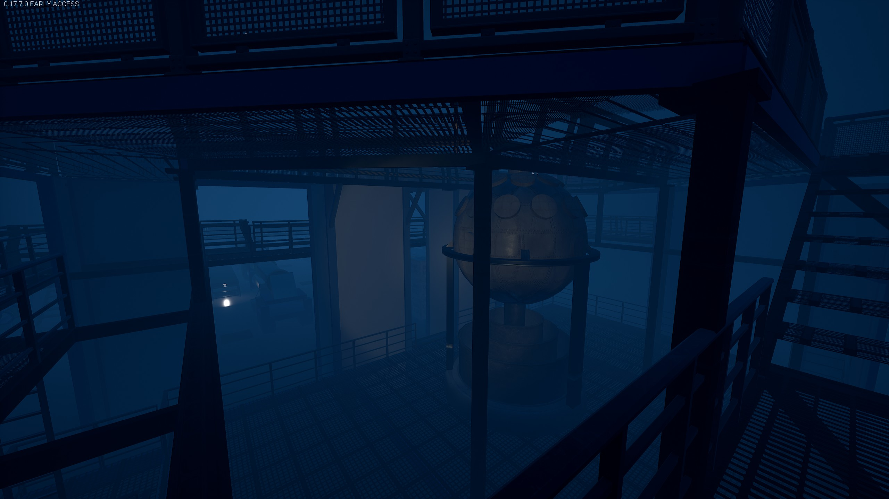
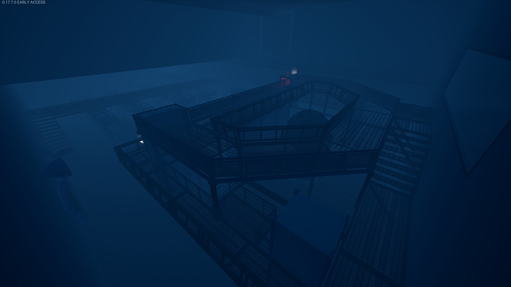
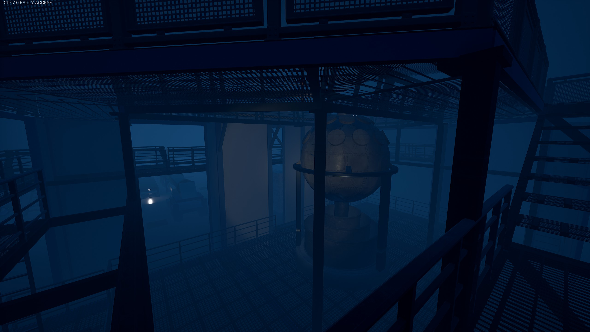
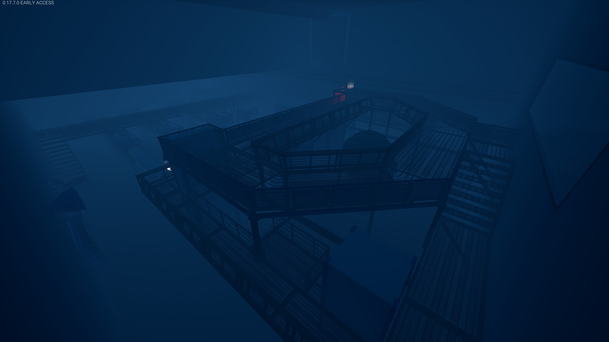
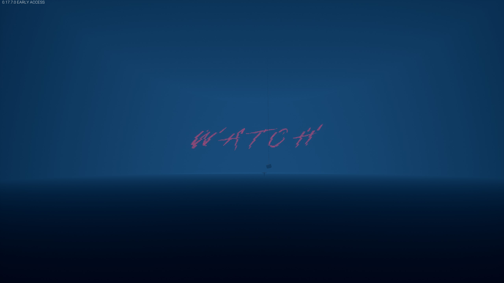
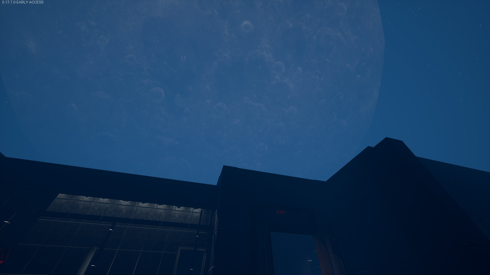

Station 58
- Platform:Tower Unite Condo Editor
- Genre: Puzzle, Escape Room
- Solo Project
Project On-Hold.
Station 58 is a puzzle/escape room level created in Tower Unite's condo editor. After a save file corruption of an initial project with multiple puzzle games, I decided to build this escape room type project. It features a couple of different puzzle mechanics and a complete story throughout the level. I also intertwined plot and video elements from an Analog Horror youtube channel titled "Local 58".
After hitting a block regarding one of the final rooms, I decided to take a break and head back to Halo Infinite's Forge tool to create "Lake Hot Pursuit" -- this project has been on-hold ever since, however I do plan on finishing it eventually.
Gameplay
The puzzle mechanics presented within the level are fairly simple. I still went out of my way to learn about a couple of concepts regarding escape rooms, one of the most important being the idea of "Lock before key". That is to say, you should present the problem to your player prior to giving them the solution. Otherwise if you give a key before the lock, the player will attempt to use the key on every lock, rather than depend on problem-solving skills. This also entertains the idea of a "Eureka" moment, similarly to what you would find in a Metroidvania, where the player suddenly thinks back to "Oh, I can use this new tool for that one thing earlier!" after acquiring said tool.
The mechanics will be explained further within each section below. Do keep in mind that this very much still is a work-in-progress.
Section 1, story setting
Immediately upon arriving within the condo, players are guided to the first room. They are presented with a fairly obvious keypad. Attempting to interact with said keypad reinforces the suggestion that it requires a code, and that it should be opened. On the table, illuminated by a lamp, lies a book which players can read in order to situate themselves with their environment, and get a clue on how to proceed.
From there, the players should seek to get helpful materials from within one of the lockers, as well as a cassette tape which they can play on the computer/media player on the desk. Watching the video in turns enables a trigger near a poster which is made obvious by the contents and messages of the video they've watched. Approaching said poster reveals the code for the locked keypad.
Section 2, finding objects
After passing the first room, it is made obvious that the following challenge requires the player to find specific key objects in order to open the garage door at the end of the room. As a placeholder, I had been using red balls. Some are hidden at different heights, other placed within boxes or behind other objects.
Section 3, cross-room interactions
This section has the player interact with three different rooms at once over a slightly longer distance and back-and-forth.
They're presented with a locked door, a secured airlock and the lobby where they may find a keycard which allows them to access the control room. Would the condo editor have such advanced features, the main idea would be to have an interactive scene play out to help set the tone - something that would feel a little bit like what you'd find in "Outlast".
Section 3, the control room
Should the player be capable of solving a fairly simple puzzle within this room, they'd soon find themselves having to make a run for the airlock as its access is time limited when unlocked.
Section 4, the laboratory
This specific area is sectioned into three different sub puzzles. The first room requires you to decypher a symbol to number code on the keypad by finding its relevant clues around the room. The second requires you to be attentive to bloodtrails in the room, along with remembering some very blatant information which was communicated near the beginning of the level, and the third gives you an idea of where you have to go in order to progress within the level as your access is blocked by a broken door access panel.
This section also contains an interactive scene once players finish reading a book which clues them into entering the now unlocked admin room in the laboratory. After flickering, the lights turn to red and a menacing set of sounds play as a the doors lock and a monster briefly appears at the end of the lab. Shortly after the situation returning to normal, the doors unlock themselves and the way to the admin room is opened, where the player is then guided to return to the control room to enter through the ventilation shaft.
Section 5, the vent maze
Fairly simple section, slightly confusing maze which eventually leads you to the area behind the broken door.
Section 6, moment of respite
Once the player finds themselves on the other side of the door, they have to walk through an uneventful hallway which is where I'd generally have some kind of advanced piece of content made for storytelling.
Section 7, the experimental room
 



At this point, this room was supposed to be much smaller, or at least slightly more compact with different accessible areas. However the scope got a little large, and that was the point at which I couldn't quite make up my mind with what the room should be like, considering the limited options offered by the condo editor. I had decided to put the room on-hold and start working on the rest of the map.
Section X, the inbetween
From that point forward, I focused on adding a few smaller story-driven sections leading up to the ending of the condo. From an interactive scene to a claustrophobic janitor closet, ultimately leading to the ending sequence in the section below.
Section X, the ending
After falling through the world when they player believed they would make a successful escape, wondering why they had been getting deeper and deeper into the facility, the player is frozen in placed forced to stare down a long hallway. A few interactive triggers happen here, until the player is the quickly sent down the hallway to a set of doors, the doors are opened and the player snaps back to the beginning of the level while keeping the same momentum and doors opening. The player is pushed through the exit, where the entity wanted them. They take damage, and the gigantic unnerving moon appears in the sky as a line of what seem to be lifeless "people" welcomes the player amongst them.
All in all, despite the clear limitations set forward by the primitive level of tower unite's condo editing tool, I do hope to eventually revisit this condo in order to finish it completely, host playthrough sessions of it and release it on the Steam workshop in time. The Tower Unite development team actually showed up and played through the level while I was AFK and forgot to lock the condo while working on it, I was pretty surprised to find out they had actually enjoyed it very much despite its unfinished and unpolished state.
Gallery

